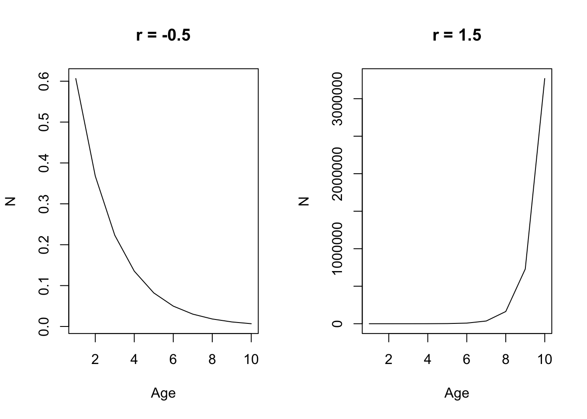

Chapter 1 Quinn and Deriso (1999)
1.1 Chapter 1 (Population Growth, Mortality, and the Fishing Process)
1.1.1 Geometric and Exponential Growth
Representing changes in populations can be done in two ways: 1) time-discrete functions (difference equations), and 2) continuous functions (differential equations). Additionally, changes in population growth here are represented as either geometric or exponential. These population models presented below refer to the geometric and exponential laws of growth.
A common assumption in the difference equation setting is that population growth or decline changes as a constant ratio from one point to the next:
\[\begin{equation} N_{t+1} = N_tR \\ N_{t+1}/N_t = R \\ N_{t} = N_0R^t \end{equation}\]
where R represents a common multiple or ratio of change, and is also commonly reffered to as the Malthusian parameter. When R < 0, the population declines geometrically to 0, and when R > 1, the population increases geometrically without bound. The difference between geometric and exponential (differential) changes lies in the fact that geometric changes are discrete (multiplied by a constant factor), whereas exponential changes are continuous and instantaneous (multiplied by a constant percentage).
R_0.5 <- 0.5 # Constant ratio of growth
R_1.5 <- 1.5 # Constant ratio of growth
t <- seq(1,10,1) # time index
N <- 1 # Numbers in time 1
par(mfrow = c(1,2))
plot(N*R_0.5^t, xlab = "Age", ylab = "N", main = "R = 0.5", type = "l")
plot(N*R_1.5^t, xlab = "Age", ylab = "N", main = "R = 1.5", type = "l")
For a geometric population growth model, the change in the population is given by:
\[\begin{equation} \Delta N_t = N_{t+1} - N_{t}\\ \Delta N_t = N_{t}R - N_{t} = (R-1)N_{t} \end{equation}\]
and so the per-capita rate of change is:
\[\begin{equation} \Delta N_t / N_{t} = R-1 \end{equation}\]
In the differential equation setting, where changes are instantaneous instead of discrete, we can rewrite the equations above as:
\[\begin{equation} \Delta N_{t+h} = N_0R^{t+h} = N_tR^h \\ \frac{\Delta N_t}{\Delta t} = \frac{ N_{t+h} - N_{t}}{(t+h) - t} = N_t\frac{R^h-1}{h} \end{equation}\]
which yields the following after using lHoptial’s Rule:
\[\begin{equation} \frac{dN(t)}{dt} = rN(t) \\ \int_{N_0}^{N} \frac{1}{N(t)} dN(t) = \int rdt \\ logN - logN_0 = rt \\ logN = logN_0 + rt\\ N_t = N_0e^{rt} \end{equation}\]
R_0.5 <- -0.5 # instantaneous rate of growth
R_1.5 <- 1.5 # instantaneous rate of growth
t <- seq(1,10,1) # time index
N <- 1 # Numbers in time 1
par(mfrow = c(1,2))
plot(N*exp(R_0.5*t), xlab = "Age", ylab = "N", main = "r = -0.5", type = "l")
plot(N*exp(R_1.5*t), xlab = "Age", ylab = "N", main = "r = 1.5", type = "l")
For both the difference and differential equation representation, the change in abundance is directly proportional to its previous abundance. Similarly, r the parameter that describes instantaneous growth demonstrates a population that declines exponentially if r < 0, and increases exponentially when r > 0.
1.1.1.1 Cell Division Example 1.4
N0 <- 1 # start numbers
R <- log(2) # change in growth
t <- seq(1,6, 0.1) # time sequence
par(mfrow = c(1,1))
plot(t, N0 * exp(R * t), type = "l", xlab = "t", ylab = "N")
abline(v = 4)
abline(v = 4.5)
abline(v = 5)
The example above showcases the danger of using a continuous model to calculate changes in populations when the model is actually a discrete time index. i.e., the abundance is different for time 4.5, compared to time 4 or time 5. An additional deficiency to some of these models is that it assumes growth in the population occurs without any bound (i.e., no carrying capacity).
1.1.2 Logistic Model
- Population growth cannot increase without bounds, because it is mediated by density dependent factors (e.g., food diseases, space limitations, and competition) can lead to changes in K (carrying capacity). As the population approaches K, your change in growth should begin to slow down.
The logistic model is given below by including a linear modifying factor (1 - N/K) to reduce growth rates as N approaches K:
\[\begin{equation} \frac{dN}{dt} = rN(1-\frac{N}{k}) \\ N_t = \frac{N_0e^{rt}}{1 - \frac{N_0}{K} + \frac{N_0}{K}e^{rt}} \end{equation}\]
where the denominator of the second equation is a dampening factor to make sure the numerator doesn’t increase without bound. As you can see in the plot below, as N0 approaches K, the denominator gets larger, which reduces the change in the numerator such that is dampens it and is unable to increase without bound. When N > K, it decreases exponentially, and when N = K, growth is constant. When N < K, it increases sigmoidally. The differential equation is pretty easy to solve, but involves some annoying algebra to rearrange and calculate partial fractions for the N and r terms.
N01 <- 0.1 # start N
N02 <- 5 # start N
N03 <- 1 # start N
r <- 0.5 # rate of growth
K <- 1 # carrying capacity
t <- seq(1, 10, 1) # time index
par(mfrow = c(3,2))
plot(t, N01 * exp(r * t) / (1 - (N01/K) + (N01/K * exp(r*t))), type = "l", ylab = "N", main = "N < K")
plot((1 - N01/K + N01/K * exp(r*t)), type = "l", ylab = "Denomiator")
plot(t, N02 * exp(r * t) / (1 - (N02/K) + (N02/K * exp(r*t))), type = "l", ylab = "N", main = "N > K")
plot((1 - N02/K + N02/K * exp(r*t)), type = "l", ylab = "Denomiator")
plot(t, N03 * exp(r * t) / (1 - (N03/K) + (N03/K * exp(r*t))), type = "l", ylab = "N", main = "N = K")
plot((1 - N03/K + N03/K * exp(r*t)), type = "l", ylab = "Denomiator")
1.1.3 Time-varying parameters
- Logistic growth model and the r and K parameters do not necessarily have to be constant, but instead can vary as a function of time. This can happen if let’s say productivity of the population changes via a regime shift, or if there is a competitor has been removed from the population so as to free up resources available to the species of interest. (Reference page 7 for derivation).
- In general, the effect of r is greatest when populations are small, and the effect of K is greatest when the population is big. Furthermore, the change in population tends to be weighted more heavily towards the most recent K - given that the integral of Eq. 1.15 is the weighted harmonic mean of previous carrying capacities (I don’t really get that part…)
N01 <- 0.1
t <- seq(1, 20, 1) # time index
r_constant <- 0.5 # constant rate of growth
r <- sin(0.5 * t) + 0.5 # rate of growth
K <- sin(0.3*t) + 3 # carrying capacity
K_constant <- 3 # constant K
par(mfrow = c(1,3))
plot(t, N01 * exp(r_constant * t) / (1 - (N01/K) + (N01/K * exp(r_constant*t))), type = "l", ylab = "N", main = "Time-varying K")
lines(t, K, col = "blue")
plot(t, N01 * exp(r * t) / (1 - (N01/K_constant) + (N01/K_constant * exp(r*t))), type = "l", ylab = "N", main = "Time-varying r")
lines(t, r, type = "l", col = "blue")
plot(t, N01 * exp(r * t) / (1 - (N01/K) + (N01/K * exp(r*t))), type = "l", ylab = "N", main = "Time-varying r and K")
1.1.4 Multi-species extensions (Page 9)
Multi-species extensions of the logistic growth model is needed because species can compete for the same resources, which can lead to decreasing population growth with increasing population sizes when multiple species interact - as is the case for many populations. However, this can also include both positive and negative relationships (parasite-host, mutualism, protocooperation, etc). In the extensions of multi-species models for logistic growth, the impact of competition is primarily to lower the equilibrium abundance of carrying capacity of the other species (makes sense because there are less resources for them in equilibrium).
In general, these models are seldom used for management, but are generally used for exploring hypotheses about species interactions, ecosystem information about bioenergetics and food habits, etc. They’re hard to parameterize because species interactions are highly variable, different response functions among species, and probably confounding with other variables. All of this leads to poor prediction.
1.1.5 Theory of Mortality
- Key principle: The abundance of an age-class decreases as it ages because of mortality. The following equation is commonly used in modern day stock assessments:
\[\begin{equation} \frac{dN}{dt} = -ZN \\ \int_{N_0}^{N_t} \frac{1}{N} dN = \int -Zdt \\ logN_t - logN_0 = -Zt \\ N_t = N_0e^{-Zt} \end{equation}\]
where abundance decreases exponentially as a function of time, which is modified by -Z (our natural + fishing mortality term). Hence, \(e^{-Z}\) denotes our survival fraction of the population (e.g., fraction of \(N_0\) that survives). Since this is a fraction (i.e., maxes out at 1), then the number of individuals that die are \(1 - e^{-Z}\), which represents our annual death fraction. To observe the entire cohort:
\[\begin{equation} N_t = N_{t-1}S{t-1} = N_0\prod_{x = 0}^{t - 1}S_t = N_0e^{-\sum_{x = 0}^{t - 1}Z} \end{equation}\]
where to get instantaneous survival up to certain point, its multiplicative, while to get instantaneous mortality, its additive. Additionally, these equations can be applied to find abundance during fractions of years, which can be useful for pulse fisheries (e.g., salmon fisheries), surveys, or tagging experiments:
\[\begin{equation} N_{t+\tau} = N_te^{-Z_t\tau} \end{equation}\]
where \(\tau\) represents the fraction of the year and partitions out Z to be a fraction.
1.1.6 Theory of Fishing
- Total mortality is decomposed into natural mortality and fishing mortality, both of which are commonly represented as instantaneous rates. Thus Z = F+M and the resultant population dynamics would look like:
\[\begin{equation} \frac{dN}{dt} = -FN - MN = -(F + M)N \\ N_t = N_0e^{-Z_t} = N_0e^{-(F+M)t} \end{equation}\]
Thus, catch (C) is then composed of:
\[\begin{equation} \frac{dC}{dt} = -FN \\ \end{equation}\]
and natural deaths are composed of:
\[\begin{equation} \frac{dD}{dt} = -MN \\ \end{equation}\]
To derive Baranov’s catch equation, we can integrate the catch equation in differential form:
\[\begin{equation} dC = -FNdt \\ \int_0^C dc = \int_0^\tau -FNdt \\ C = \int_0^\tau -FNdt \\ \end{equation}\]
Solving for \(\int_0^\tau -FNdt\) we get:
\[\begin{equation} \int_0^\tau FNdt = \int_0^\tau -FN_0e^{-Zt}dt \\ = -FN_0 \int_0^\tau e^{-Zt}dt \\ = -FN_0 \int_0^\tau e^{-Zt}dt \\ = -FN_0 [-\frac{1}{Z} (e^{-Zt}-e^0)] \\ = -FN_0 [-\frac{1}{Z}e^{-Zt}+\frac{1}{Z}e^0)] \\ = FN_0 [\frac{1}{Z} - \frac{1}{Z}e^{-Zt}] \\ = \frac{F}{Z}N_0(1-e^{-Zt}) \end{equation}\]
where \(\frac{F}{Z}\) represents the fraction of deaths due to fishing relative to the total mortality and \((1-e^{-Zt})\) denotes the annual death fraction. It is then easy to show that the fraction of deaths due to natural mortality is \(\frac{M}{Z}\). In general, the assumption is that catch is proportional to the instantaneous fishing mortality and its average abundance (\(N_0(1-e^{-Zt})/Zt\)) across the interval of fishing \(C = FN\). Differential formulation of these equations are inappropriate when we have pulse fishing or removals occuring over a short interval. In these circumstances, we need to rewrite catch or abudance as:
\[\begin{equation} N_t = N_0e^{-Zt} \end{equation}\] where t is up to the middle of the year (e.g., 0.4999) or some other approximation, \[\begin{equation} N_t = N_0e^{-Zt} - C\\ \end{equation}\] where C is catch and t = 0.5, which denotes the middle of the year, and \[\begin{equation} N_t = [N_0e^{-\frac{1}{2}Zt} - C]e^{-M(t-\frac{1}{2})}\\ \end{equation}\]
where t is now equal to 1 and we are simply incorporating only natural mortality in the latter half of the year.
1.1.7 Stochastic Theory of Fishing
- Rarely is it the case that we have deterministic fishing - i.e., F does not vary nor does M. We can use statistical methods to incorporate stochasticity into the fishing process, although there are some key assumptions: 1) no immigration, recruitment, or emigration from the population.
The probability of capturing an individual of a given age then follows a multinomial distribution where the probability of capturing an individual is: \[\begin{equation} p_j = \int_{t_j}^{t_j+1}F_tr_tdt \\ \end{equation}\]
where \(p_j\) is the probability an individual is captured, \(F_t\) is the fishing mortality at time t, and \(r_t\) is the probability and individual survives, and is a function of fishing and natural mortality (integrate over an interval to get it). Given this, the probability of not capturing an individual is therefore \(q = 1 - p_j\). So for a given cohort, the catch distribution can be assumed to follow a multinomial distribution, where the expectation and variances are simply derived from the binomial (multinomial individual components are binomially distributed) (e.g., \(E(C_j) = N_0p_j, V(C_j) = N_0p_j(1-p_j)\)). Following a similar fashion, the probability of selecting N individuals (the random variable) from a cohort then follows a binomial distribution with probability equal to \(r_t\) (individuals survive) and the total number of samples taken equalling to \(N_0\) (initial abundance). Thus, these equations allow for stochasticity in both catch and abundance and are random variables that are governed by some statistical distribution with a set sample space (e.g., binomial, multinomial). Allowing for stochastic theory here therefore allows us to figure out what the variances and uncertainty of our population estimates are.
1.1.8 CPUE and Fishing Process
- Catch is the product of both fishing mortality and the abundance of the population \(C = FN\), therefore, changes in catch equals changes in either fishing mortality or abundance and are confounded if you want to interpret changes in abundance. Effort data is needed to better parse out whether catch is changing (fluctuations in catch) due to F or N.
To derive CPUE, fishing effort is assumed to be independent and additive. Then, the change in catch is proportion to fishing effort per unit time and abundance:
\[\begin{equation} \frac{dC}{dt} = q\frac{dE}{dt}N \\ \frac{dC}{dt} = FN \\ FN = q\frac{dE}{dt}N \\ F = q\frac{dE}{dt}\\ Fdt = qdE \\ \int Fdt = q\int dE \\ Ft = qE \end{equation}\]
where q is the catchability coefficient - denoting the fraction of N individuals captured per unit effort. If q remains constant, then a higher effort equates to a higher fishing mortality rate. If q changes (which can reflect improvements in fishing gear, targeting practices, expansion into other areas, etc.) the fishing mortality can also get modified. So if catch is proportional to FN, then rewriting \(C = FN\) yields:
\[\begin{equation} C = FN \\ C = qEN \\ \frac{C}{E} = qN \end{equation}\]
where catch-per-unit effort can be assumed to be proportional to changes in abundance, if q is constant over time (rarely the case). Even if q is not known, you can still use CPUE to figure out relative changes in abundance. If q is known, you can simply divide CPUE by q to get N. If information about area swept or effective fishing area is known, you can extrapolate out to the total area sampled to get total abundance as well:
\[\begin{equation} N = \frac{A}{a}C \end{equation}\]
where \(A\) is the total area, and \(a\) is the sample area (i.e., if your total area is the sampled area, then catch = abundance). In relation to CPUE data, if the density of fish is \(D = N/A\) and assuming that area swept is proportional to fishing effort (\(a = qE\)), then \(N = \frac{A}{a}C\) becomes the following after some rearranging:
\[\begin{equation} N = \frac{A}{a}C \\ N = \frac{A}{qE}C \\ \frac{N}{qE} = AC\\ NqE = AC \\ \frac{N}{A}q = \frac{C}{E} \\ qD = \frac{C}{E} \end{equation}\]
and the changes in population density are therefore proportional to changes in CPUE, assuming that area swept is proportional to fishing effort (i.e., if area swept increases, then fishing effort increases as well).
1.1.8.1 Regional considerations of CPUE data
- In some cases, we might want to compare CPUE data among regions. If certain areas fished (i.e., management areas) have different CPUEs, the interpreation of relative abundance can depend on the space of that area. For example, if you fish in a small area and you have the same CPUE as a large area, that implies that the small area has a larger density of fish than the large area.
Area-specific CPUE is a simple extension of previosu equations: \[\begin{equation} \frac{C_r}{E_r} = q\frac{N_r}{A_r} = qD_r \\ \end{equation}\]
where the subscript \(r\) denotes region. To get the total abundance \(N\), its simply a sum of the densities extrapolated to the total area where one just has to cancel out the denominator of area in the density calculations:
\[\begin{equation} N = \sum_rN_r = \sum_r A_rD_r \\ N = \sum_r A_r\frac{N_r}{A_r} \\ \end{equation}\]
These equations suggest that when using CPUE data to interpret overall population trends, we need to weight the CPUE data by the area. Taking a simple sum without weighting by area can lead to spurious conclusions about population trends (i.e., because the densities by area are different).
Generally speaking, CPUE data are usually higher densities than the entire population because harvesters typically fish in areas with high densities of fish. But if we are comparing apples to apples (e.g., same areas over time), then we can still track the change in abundance in these specific areas fairly accurately. But this techincally assumes that the population is immobile if we were to interpret changes in CPUE this way. For example, if the population contracts to the fishing grounds fished, a change in CPUE in that area does not necessarily reflect a change in the ovearll abundance. This is important for surveys and CPUE standardization because we need to be surveying both areas of high abundance and low abundance, to ensure that contraction or expansion of the population isn’t a big issue. Increases in CPUE by expanding into other fishing grounds can also occur, and care is needed when interpreting naive CPUE metrics without standardization methods.
The naive use of CPUE data should be cautioned against e.g.,: \(\frac{C}{E} = \frac{\sum_rC_r}{\sum_rE_r}\) because you are not weighting the effort appropriately. Essentially, what happens here is that CPUE is now weighted by effort - this is only valid when fishing is uniformly distributed in relation to fish habitat (i.e., random sampling).
1.1.8.2 CPUE standardization and selectivity
- The use of CPUE is centered on the fact that q is constant across space and time, etc. However, q can change from vessel to vessel, areas, and time, because of differences in soak time, use of different gear, new advances, etc. Thus, to correctly interpret CPUE data, q needs to be corrected for such that it remains constant. For example, if q increases, while the abundance decreases, you CPUE can still be increasing - which leads to hyperstability.
1.1.8.2.1 Standardization
- Two general approaches: 1) standardized by fishing power coefficients (less done now that we have computational tools, and also more expensive), and 2) using statistical models (e.g., GLM, GAMs, VAST).
For the first approach, its bascially a gear calibration study where you compare gears side by side fishing at the same time, area, etc and you get the CPUE from each gear type. If you have gear \(i\) and gear \(j\), this would just be:
\[\begin{equation} FishingPower_i = \frac{U_i}{U_j} \end{equation}\]
where \(U\) is CPUE and FishingPower reflects the ratio of CPUEs. If gear \(i\) is better at catching fish per unit of effort, then \(FishingPower_i > 1\), vice versa. Effective effort can then be calculated as \(EffE_i = FishingPower_iE_i\), which is then used as to calculate CPUE \(\frac{C_i}{EffE_i}\) to make them comparable among gears or areas, etc.
The second approach is to use some form of a linear model to estimate fishing power coefficients - which are the parameters of the model. Effective effort can then be estimated by multiplying the fishing power coefficients by the observed effort. The total effective effort would then be summed across the reference effort level and the effective effort and the standardized CPUE would be calculated by summing catch across the levels (without any modification) and dividing by the effective effort, giving us our CPUE trend. Note that model-based methods will change in terms of the CPUE trend obtained as you continue to add new data.
1.1.8.2.2 Selectivity
- Selectivity refers to catching fish of particular size or age ranges. Gear selectivity is a function of fishing mortality and catchability. Thus, changes in catchability is a special case of changes in selectivity (potentially confounded in assessment applications).
The fishing mortality for a given category \(x\) is then:
\[\begin{equation} F_x = s_xF \\ F_x = s_xqE \\ q_x = s_xq \end{equation}\]
where \(s_x\) is the selectivity for a given category, and catchability can be calculated for a given category (e.g., proportion of the stock of category x caught with one unit of effort). Furthermore, CPUE is then not a reflection of the overall stock, but rather the component of the stock that is selected by the fishery (e.g., the exploitable population):
\[\begin{equation} \frac{C_x}{E_x} = qs_xN_x \end{equation}\]
Using the same ideas as fishing power coefficients, if the average abundance doesn’t change substantially (e.g., survey) such as to impact CPUE (because you can cancel out the N), then you can compare the CPUE specific to category x to understand the relative catchability between two different gears:
\[\begin{equation} \frac{U_{x1}}{U_{x2}} = \frac{q_1s_{x1}N_x}{q_2s_{x2}N_x} = \frac{q_1s_{x1}}{q_2s_{x2}}\\ \end{equation}\]
where \(1\) and \(2\) refer to the different gears. As you can see above, selectivity and catchability are confounded and you can only compare the relative selectivities between the two different gear types (because q cannot easily be distinguished). In the context of an assessment, it really shows the importance of getting q correct/constant and standardizing the CPUE such that information from selectivity can be attributed to the selectivity process rather than the catchability process. In general, the comparison between gear selectivities are a special case of CPUE standardization - i.e., comparing the fishing power coefficients and making them relative to some reference gear.
CPUE standardization and investigation of gear selectivities can be investigated jointly. One approach would be to construct age or length specific CPUE, the other approach would be to add in these bins as a factor in a linear model, and look at how CPUE changes as a function of bins.
1.1.8.2.3 Sampling CPUE data
Assuming that CPUE is collected with random sampling, the variance of catch sampled is proportional to fishing effort (i.e., more samples and more effort = lower variance; see Eq. 1.46 and 1.47). Subsequent calculations for the variance of effort and CPUE can be found in pages 26 - 27, and simply follows the linear properties of variances using their expected values.
1.1.8.2.4 More Complex Models for CPUE
As noted above, catchability might not be constant due to a variety of factors, and might not be linearly related to abundance. Several models can be constructed and one such model raises effort and abundance to estimated parameters to get non-linear relationships:
\[\begin{equation} C = qE^{\alpha + 1} N^{\beta + 1} \\ C = qE^\alpha E N^\beta N \\ \frac{C}{E} = (qE^\alpha N^\beta) N \end{equation}\]
where \(\alpha\) and \(\beta\) are power functions such that \(q\) is linearly related to power functions of effort and abundance. The following relationships can be derived by changing \(\beta\) and is what we come to know as hyperstability and hyperdepletion. Holding \(\alpha\) constant and varying \(\beta\), we see that when \(\beta = 0\), abundance is just raised to the power of 1 (i.e., proportional relationship between CPUE and N), when \(\beta > 0\), then abundance is raised to the power of something greater than 1, resulting in an exponential relationship (hyperdepletion, where CPUE increases less quickly than abundance). Conversely, when \(-1 < \beta < 0\) such that N is raised to the power of something less than 1, the relationship between CPUE resembles more of an asymptotic curve (hyperstability, where CPUE increases quicker than abundance).
Under hyperstability, a population is fished down more rapidly than indicated by CPUE because you have the illusion of plenty - i.e., CPUE is increasing, but stock is actually smaller. Under hyperdepleted scenarios, a population is not declining as quickly as the trend suggests (i.e., illusion of little). Hyperstability can be caused by contraction of a stock (i.e., cod), increasing fishing power, targetting fish preferred habitats, subsetting data to only look at certain vessels, areas, etc. Hyperdepletion can be caused by depleting a stock in a localized area, but not expanding to other areas where abundance is high (e.g., only considering areas that were fished) (see Walters 2003 as well).
q <- 1 # catchability
N <- seq(1, 10, 1) # abundance
E <- 3 # effort
alpha <- 0 # alpha for effort
beta_1 <- 0 # beta for abundance (proportional)
beta_2 <- 0.8 # beta for abundance (hyperdepletion)
beta_3 <- -0.3 # beta for abundance (hyperstable)
CPUE_prop <- (q * E^(alpha) * N^(beta_1)) * N
CPUE_prop <- CPUE_prop / mean(CPUE_prop)
CPUE_hd <- (q * E^(alpha) * N^(beta_2)) * N
CPUE_hd <- CPUE_hd / mean(CPUE_hd)
CPUE_hs <- (q * E^(alpha) * N^(beta_3)) * N
CPUE_hs <- CPUE_hs / mean(CPUE_hs)
plot(N, CPUE_prop, ylab = "CPUE", xlab = "N", type = "l", lwd = 5)
lines(N,CPUE_hd, ylab = "CPUE", xlab = "N", type = "l", col = "red", lwd = 5)
lines(N, CPUE_hs, ylab = "CPUE", xlab = "N", type = "l", col = "blue", lwd = 5)
In the case where \(\alpha\) changes, it changes the relationship between fishing mortality and effort. Recall that \(F = qE\). Thus, F no longer changes linearly with effort. Similar to the relationship between hyperstability and hyperdepletion, when \(\alpha = 0\), the relationship between F and effort is linear, when \(-1 < \alpha < 0\) more effort leads to what we term as gear saturation (more effort = less incremental catch), and when \(\alpha > 0\), it leads to what we term as gear synergy (more effort = more incremental catch). Other extensions of these models (accounting for non-linear relationships between F and effort and abundance and CPUE) are similar and more flexible options are available (see page 29).
1.1.8.2.5 Statistical models for CPUE
To fit statistical models for CPUE (using the more “complex” models described above), one needs to figure out what distribution to use to adequately characterize the uncertainty in CPUE predictions. Back in the day, we would do a bunch of different transformations (e.g., log, Box-Cox) and use Poisson approximations to fit models to CPUE data, likely given computational demands. However, in the modern day, we are now able to use more complex statistical distributions (e.g., Tweedie, negative-binomial) to fit to CPUE data. The book gives a full detailed explanation taking you step-by-step how the MLE process is done, as well as getting the mean and variances using mgf and integration methods, and the delta method (pages 31 - 33).
There are couple ways to obtain confidence intervals for the median of CPUE, which include: 1) the delta method as mentioned above \(\sqrt n (g(X_n) - g(\mu)) \xrightarrow{D} N(0,\sigma_\mu^2 g^`(\mu)^2)\), 2) likelihood profiles, 3) reparameterize the model so that you are estimating the median instead of the mean, 3) brute-force methods (e.g., bootstrapping, MCMC).
1.1.8.3 Other considerations w/ CPUE data (Schooling, Searching)
There are several considerations that need to be accounted for when using CPUE data. Under a scenario where we are using passive fishing gear (e.g., hook and line w/ bait) where fish are attracted to bait, there is a potential for increased variance in your catch because of aggregations (i.e., sampling is not representative of the entire population or similar to clustering issues). No bias is expected to occur unless when there is severe competition for bait (e.g., hook competition) or the fishery is in areas of high abundance.
In terms of active searching gear, there are some other implications that need to be considered, particularly when fishing for schooling species. The book gives an example where if a sampling process is random and a small fraction of the school is taken, the number of schools stays the same, but the population goes down. In this case, using encounter non-encounter data (i.e., binomial likelihood) would give us an index on the number of schools in the population, but not the overall population (i.e., more encounters = more schools). The other issue the book points out is that if catch per unit effort is used, and the catch of the school remains constant per unit effort, your average CPUE will remain the same, but abundance declines, which might not be reflected in your data (I don’t really get this point…). Nonetheless, the general consensus is that using CPUE for schooling fish can be tricky.
Some models have been developed to estimate the encounter rates as a function of predator search and handling time (Michaelis-Menten equation):
\[\begin{equation} n = a\tau_sD = a(\tau_t - n\tau_h)D \\ n = \frac{a\tau_sD}{1 + a\tau_hD} \end{equation}\]
where a is a search rate (area searched per unit time), \(\tau_s\) is time spent searching by a predator, \(\tau_t = \tau_s + n\tau_h\) is the total time available for searching \(\tau_h\) is handling time, D is density and n = encounter rate. Encounter rates (n) increases with increased densities, but levels off (asymptotes) because of partitioning between search and handling time (i.e.., \(\tau_t\) is partitioned between search (\(\tau_s\)) and total handling time (\(n\tau_h\)) when there are a lot of encounters). In a schooling species, we can use this equation and relate CPUE as density (encounter/search time). Generally, the relationship begins to asymptote because the amount of time
Given the equation above, reducing \(\tau_s\) reduces the maximum number of schools encountered (because its in the numerator), changing \(\tau_s\) therefore changes the scale of the relationship.
a = 0.3 # search rate
tau_s = seq(0.1, 1, 0.1) # search per unit time
tau_h = 1 # handling per unit time
D = seq(1, 1e3, 1) / 30 # density
col = viridis::viridis(n = length(tau_s))
for(i in 1:length(tau_s)) {
if(i == 1) plot(D, (a * tau_s[i] * D) / (1 + (a * tau_h * D)), lwd = 5, col = col[i], ylim = c(0,1),
xlab = "Density", ylab = "Schools encountered", main = "Changing search time")
else lines(D, (a * tau_s[i] * D) / (1 + (a * tau_h * D)), lwd = 5, col = col[i])
}
while changing \(\tau_h\) similarly has an effect on the overall scale of the curve - where increasing \(\tau_h\) reduces the number of schools encountered, because the predator partitions out time to handle prey.
a = 0.3 # search rate
tau_h = seq(0.1, 1, 0.1) # handling per unit time
tau_s = 1 # search per unit time
D = seq(1, 1e3, 1) / 30 # density
col = viridis::viridis(n = length(tau_h))
for(i in 1:length(tau_h)) {
if(i == 1) plot(D, (a * tau_s * D) / (1 + (a * tau_h[i] * D)), lwd = 5, col = col[i], ylim = c(0,5),
xlab = "Density", ylab = "Schools encountered", main = "Changing handling time")
else lines(D, (a * tau_s * D) / (1 + (a * tau_h[i] * D)), lwd = 5, col = col[i])
}
1.1.8.4 Line Transect Model (Schooling Populations)
Some other extensions of this model provided by the book uses line transect theory, where the total number of schools encountered is the ratio of effective area search and the total area occupied by the population, multiplied by the number of schools:
\[\begin{equation} E(n_t) = \frac{2L_tc(S_t)}{A}N_t \\ c(S_t) = a + bln(S_t) \end{equation}\]
where \(n_t\) is the number of schools encountered, \(L_t\) is the length of the search along a transect, \(c(S_t)\) is the effective width of search along the transect, \(S_t\) is the size of the school, and \(N_t\) are the number of schools in the population. Presumably, the 2 refers to both sides of the transect? Regardless, this shows that the number of schools encountered is equal to the ratio of searched area and total area multiplied by the total schools. The effective width searched is then some function of the average size of the school. In this model, mortality is additionally included:
\[\begin{equation} C_t = \overline{C}n_t \end{equation}\]
where \(\overline{C}\) can be assumed to be a fixed number of fish killed per school (i.e., for each school encountered, a fixed number is removed). Additionally, some other extensions could include a fixed proportion of the school:
\[\begin{equation} C_t = p_cS_tn_t \end{equation}\]
where \(p_cS_t = \overline{C}\) and is a proportion of the average size of the school. Then, the number of individuals at each time is:
\[\begin{equation} T{t+1} = T_t - C_t \end{equation}\]
where \(T\) is the total number of individuals. Fragmented schools can also be incoroporated via \(N_{t+1} = N_t + (x - 1)n_t\), where each school encountered breaks off into a constant number of schools.
In an example where we have data for number of schools encountered, length of search, and catch from each encounter, then three CPUE measures can be used: 1) schools / length of search, 2) catch / length of search, and 3) catch / school encountered. The expected values of the CPUE measures can easily be derived using the aforementioned equations and rearrange them (see page 39). In general, these relationships (CPUE) show that CPUE is not directly proportional to the abundance of the schools or the average school size, and is often hard to interpret. In reality, you need information on encounter rates, fragmentation rates, school size, etc. to really understand what’s going on with schooling population dynamics. Welp… we went through all these equations, just to find out that none of the CPUE measures above do a great job of describing the population…
1.1.9 Schooling Population Example (Vagaries of CPUE)
N_1 = 100 # number of schools in pop
S_t = 10 # number of individuals per school
T_1 = N_1 * S_t # number of total individuals
A = 100 # total pop area
L_t = 10 # length searched
Cbar = 3 # number of individuals killed per school encountered
x = 2 # school fragment when encountered
a = b = 0.5 # c(St) relationship encounter parameters
cS_t = a + (b * log(S_t) )# effective area searched
t = seq(1, 5, 1) # time
# set up empty vectors
N_vec = vector() # total number of schools
T_vec = vector() # total individuals
n_vec = vector() # schools encountered
C_vec = vector() # catch
nL = vector() # schools encountered / length searched
CL = vector() # catch / length searched
Cn = vector() # catch per number of schools encountered
for(i in 1:length(t)) {
if(i == 1) {
N_vec[i] = N_1 # total schools
T_vec[i] = T_1 # total individuals
} # time i = 1
# population dynamics
n_vec[i] = ((2 * L_t * cS_t) / A) * N_vec[i] # total number of schools encountered
C_vec[i] = Cbar * n_vec[i] # total catch
if(i < length(t))T_vec[i+1] = T_vec[i] - C_vec[i] # total abundance in the next year
if(i < length(t))N_vec[i+1] = N_vec[i] + (x - 1) * n_vec[i] # update to the number of schools after fragmenting
# cpue measures
nL[i] = n_vec[i] / L_t
CL[i] = C_vec[i] / L_t
Cn[i] = C_vec[i] / n_vec[i]
}
# Relationships between Total Schools and Number of individuals
par(mfrow = c(1,1))
plot(N_vec, T_vec, type = "l", lwd = 5, xlab = "Total Schools", ylab = "Total Numbers" )
# Relationships between CPUE and population vectors
par(mfrow = c(2,3))
plot(T_vec, nL, type = "l", lwd = 5, xlab = "Total Numbers", ylab = "Schools Encountered / Length searched" )
plot(T_vec, CL, type = "l", lwd = 5, xlab = "Total Numbers", ylab = "Catch / Length searched" )
plot(T_vec, Cn, type = "l", lwd = 5, xlab = "Total Numbers", ylab = "Catch / Schools Encountered" )
plot(N_vec, nL, type = "l", lwd = 5, xlab = "Total Schools", ylab = "Schools Encountered / Length searched" )
plot(N_vec, CL, type = "l", lwd = 5, xlab = "Total Schools", ylab = "Catch / Length searched" )
plot(N_vec, Cn, type = "l", lwd = 5, xlab = "Total Schools", ylab = "Catch / Schools Encountered" )
As you can see, an increase in the number of schools does not necessarily reflect an increase in the numbers (because of fragmentation). Catch / number of schools encountered, results in a constant CPUE, while an increase in encounters and catch / length searched reflects a lower population size, and an increase in the aforementioned CPUE measures leads to an increased number of schools detected (but the population size is reduced). So this is all to say its hard to figure out a good index for schooling populations, especially if fragmentation occurs.